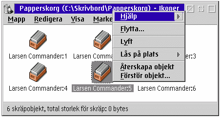

De flesta m„nniskor „r troligtvis redan bekanta med den h„r funktionen, d„rf”r att MacOS, Windows 95 och KDE (i Linux) erbjuder „ven den h„r funktionen. Grundl„ggande, papperskorgen lagrar tempor„rt alla objekt som har raderats, i fall du raderat n†got av misstag s† att du kan f† det tillbaka genom att ”ppna papperskorgen (vilken beter sig som en vanlig mapp) och †terskapa ett objekt.
Med &xwp;, kommer papperskorgen att snappa upp alla WPS "radera" operationer. (Den kommer inte
att omfatta kommandoradsoperationer eller &os2;'s DELDIR inst„llning.)
Notera: Papperskorgen skapas inte automatiskt under installationen, och papperskorgens st”d f”r "radera" „r fr†n b”rjan avaktiverad f”r att undvika f”rvirring. F”r att papperskorgen skall fungera, aktivera den p† sidan med "Funktioner" i "&xwp; Setup" objektet.
Radera ett objekt med papperskorgen kan g”ras p† tv† s„tt:
Du kan fortfarande utf”ra "verklig" radering (det betyder, verkligen radera objektet, ist„llet f”r att flytta det till papperskorgen) genom att h†lla ner "Shift" tangenten n„r du klickar p† menyposten "Radera" i ett objekts kontextmeny.

Ocks†, n„r n†got objekt „r i papperskorgen, kommer papperskorgsobjektet sj„lvt att f† en ytterligare menypost som heter "T”m papperskorgen", vilket kommer att radera alla objekten i papperskorgen f”r gott.
Papperkorgen har en ny sida med inst„llningar i sin notbok, med ytterligare funktioner. Tryck "Hj„lp" p† den sidan f”r mer information.
Om du „r intresserad i detalj om hur papperskorgen fungerar internt, var v„nlig se
respektive sida i sektionen "&xwp; Interna".